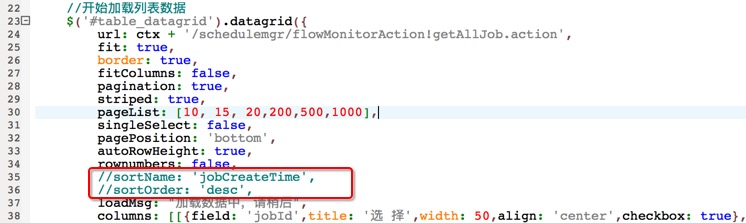
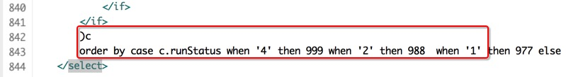
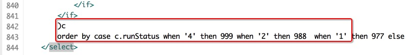

6.流程监控里Job显示排序问题
问题描述：现有job显示排序为只按照jobCreateTime降序排列，现需要修改为按照runStatus降序排列、runStartTime降序排列、jobCreateTime降序排列。
a.原因分析：
这个功能属于新需求。b.解决办法：
1.修改了schedule_flow_monitor.js文件：

2.修改了FlowMonitorMapper.xml文件：
 

select * from(
select distinct on (a.job_create_time,a.job_id) a.job_id, a.JOB_ID as jobId, a.use_status as useStatus, a.JOB_NAME as jobName, a.JOB_XML_DEFINE as jobXmlDefine, a.WARN_LEVEL as warnLevel, a.IS_PARALLEL as isParallel, a.job_create_time as jobCreateTime, a.job_desc as jobDesc, a.schedule_interval as scheduleInterval, a.job_data_dateformat as jobDataDateFormat, b.run_status as runStatus, b.JOB_GROUP_ID as jobGroupId, b.SYSTEM_ID as systemId, b.RUN_STATUS as runState, b.job_period_type as jobPeriodType, b.node_count as total, b.running_count as runtotal, b.not_running_count as noruntotal, b.run_suc_count as successtotal, b.run_fail_count as failtotal, b.delayed_count as delaytotal, b.JOB_DATA_DATE as jobDataDate, b.run_start_time as runStartTime, b.run_close_time as runCloseTime, b.run_begin_time as begintime, b.run_end_time as endtime, b.next_run_time as nextRunTime, b.SERIAL_NUM as timeStamps, e.system_name || ' >> ' || d.job_group_name as systemJobGroup from td_job a left join (select * from td_running_job where show_status = 1 ) b on a.job_id = b.job_id left join td_user_job c on a.job_id = c.job_id left join td_job_group d on a.job_group_id=d.job_group_id left join td_system e on a.system_id=e.system_id left join td_node n on n.job_id=a.job_id left join td_job_runcondition r on r.job_id=a.job_id where 1=1 and c.if_read = 1 and a.run_status != 14
)c
order by case c.runStatus when '4' then 999 when '2' then 988 when '1' then 977 else c.runStatus end desc, c.runStartTime desc, c.jobCreateTime desc limit 10 offset 0